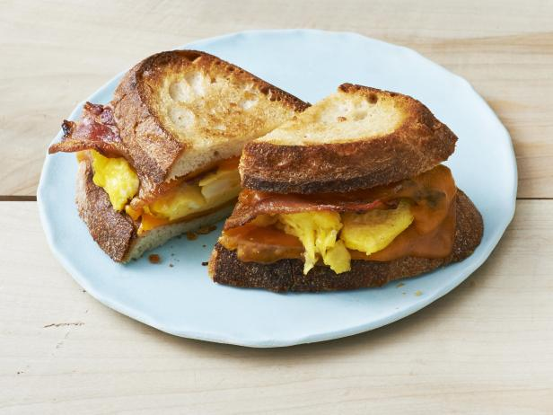

Bacon,Egg and Cheese

Shawn's Famous Bacon,Egg and Cheese
Shawn is from New Jersey and there is nothing like going to the bagel shop after
a hard workout to start your day! You can't get cream cheese or butter, you need
a bacon/sausage/ or taylor ham, egg and cheese! No if, ands or buts! Lets stick
with a bacon,egg and cheese today.
You will only need a knife and frying pan for this one
Ingredients
- 1 fresh everything bagel
- 4 slices bacon
- 2 eggs
- 2 slices american cheese/li>
- salt
- pepper
- ketchup
Steps
- Cut bagel in half
- Place bacon in frying pan on medium heat and cook until fat is rendered
- Remove bacon and place on plate with a paper towel underneath the bacon
- Cook eggs in lard from bacon
- Once you flip the eggs, put on two slices of cheese,salt and pepper
- Place bacon on top of cheesy seasoned eggs
- Put ketchup on a bagel side of your choice
- Use a spatula and put the contents on bagel
- Serve hot and enjoy!